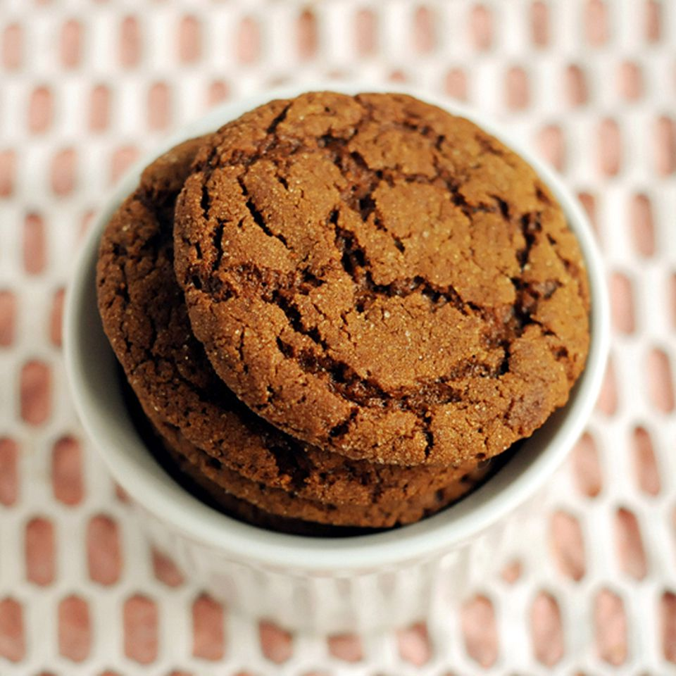

Big Soft Ginger Cookies

Description
Big, soft, gingerbread cookies made with molasses, ginger, and other spices are a holiday favorite.
This gingerbread cookie recipe for ginger cookies rolled in sugar is my oldest son's favorite.
Store cooled cookies in an airtight container and they will stay soft for days.
Ingredients
-
Sugar: You'll need about a cup of sugar for the cookie dough,
plus about two tablespoons of sugar for rolling the dough balls.
-
Flour: All-purpose flour gives the cookies structure and helps create a tender texture.
-
Spices: These soft gingerbread cookies are spiced with ginger, cinnamon, and cloves.
-
Baking soda: Baking soda acts as a leavener, which means it makes the dough rise.
-
Salt: A pinch of salt enhances the flavors of the other ingredients.
-
Butter: Butter is great for making perfectly soft ginger cookies
with slightly crisp edges. If you'd like, you can substitute margarine.
-
Egg: An egg adds moisture and acts as a binding agent (it holds the dough together).
-
Molasses: Molasses lends warm, cozy, and sweet flavor to these soft gingerbread cookies.
Steps
- Sift the dry ingredients together.
- Cream the butter and sugar together. Beat in the egg, then add the water and molasses.
-
Stir the dry ingredients into the wet ingredients until well-combined.
-
Shape the dough into balls, roll the balls in sugar, and flatten them slightly.
- Bake in a preheated oven until almost set and cool on a wire rack.
The recipe website